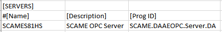
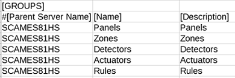
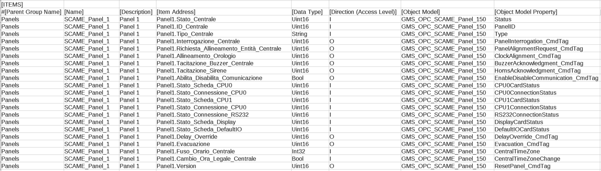

SCAME S81-HS Configuration (CSV) File
To integrate the SCAME S81-HS fire detection system into Desigo CC you must first prepare a textual configuration file in CSV (comma separated values) format that defines the servers-groups-items structure.
To do this, use Microsoft Excel or a text editor to edit the configuration file.
NOTE: Use a comma (,) as separator.
You can then use this file to import the configuration.
For reference information about the OPC configuration CSV file, see CSV File for Third-party OPC Devices.
To obtain pre-configured CSV sample files to edit, contact the Technical Support team.
Having a pre-configured CSV file with OPC tags already defined for each object reduces the risk of entering invalid OPC items names that might result in communication error when reading the OPC tags.
Pre-configured sample files can be used to create custom configuration files by adding or removing points, according to the specific configuration.
Additionally, since the device points are imported into Management View as a flat list, pre-configured sample files also provide a predefined Management View structure, made by means of OPC groups.
SCAME S81-HS OPC CSV File Sections
Section | Description |
[SERVERS] | SCAME OPC server data. One server per CSV file is allowed. |
[GROUPS] | Groups the SCAME OPC tags in components. |
[ITEMS] | Includes tag data (SCAME OPC points read from the OPC Server). |
SCAME S81-HS Servers Data
The [SERVERS] section comprises the following data:
Data | Description |
[Name] | OPC server name to display in System Browser. |
[Description] | OPC server description to display in System Browser. |
[ProgId] | Program ID of the OPC server. |
[Alias] | Not used. |
[FunctionName] | Function name, as necessary |
[Discipline ID] | Not used. |
[Subdiscipline ID] | Not used. |
[Type ID] | Not used. |
[Subtype ID] | Not used. |

SCAME S81-HS Groups Data
The [GROUPS] section comprises the following data:
Data | Description |
[ParentServerName] | Name of the OPC server to which the point is connected. |
[Name] | OPC group name to display in System Browser. |
[Description] | OPC group description to display In System Browser. |

SCAME S81-HS Items Data
The [ITEMS] section comprises the following data:
Data | Description |
[Parent Group Name] | Name of the group to which the point belongs. |
[Name] | OPC item name to display In System Browser. |
[Description] | OPC item description to display In System Browser. |
[Item Address] | Name of the tag that is exposed by the OPC server. |
[Data Type] | Transformation type. Data format required by the OPC server. |
[Direction (Access Level)] | This item defines if the OPC item is input, output or input/output. |
[Object Model] | Name of the object model used for this OPC tag.
|
[Object Model Property] | Name of the DPE associated to this OPC tag. |
[Alias] | Not used. |
[Function Name] | Name of the semantic function, as necessary depending on the specific objects. The SCAME S81-HS extension provides the following functions: |
[Discipline ID] | Not used. |
[Subdiscipline ID] | Not used. |
[Type ID] | Not used. |
[Subtype ID] | Not used. |
[Min] | Not used. |
[Max] | Not used. |
[MinRaw] | Not used. |
[MaxRaw] | Not used. |
[MinEng] | Not used. |
[MaxEng] | Not used. |
[Resolution] | Not used. |
[Eng Unit] | Not used. |
[StateText] | Not used. |
[AlarmClass] | Not used. |
[AlarmType] | Not used. |
[AlarmValue] | Not used. |
[EventText] | Not used. |
[NormalText] | Not used. |
[UpperHysteresis] | Not used. |
[LowerHysteresis] | Not used. |
[LogicalHierarchy] | Used to create a hierarchy in the logical view. |
[UserHierarchy] | Used to create a hierarchy in the user-defined view. |
